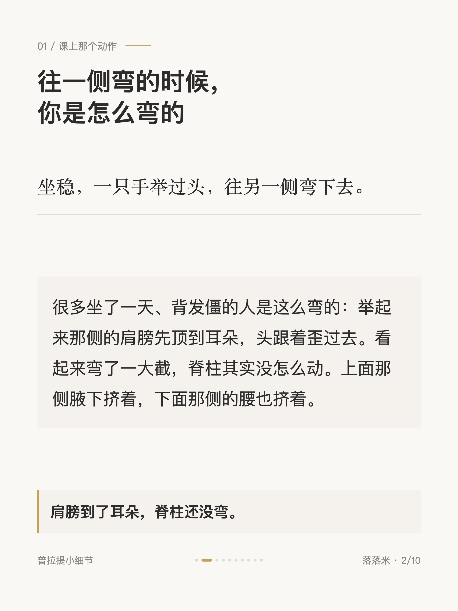
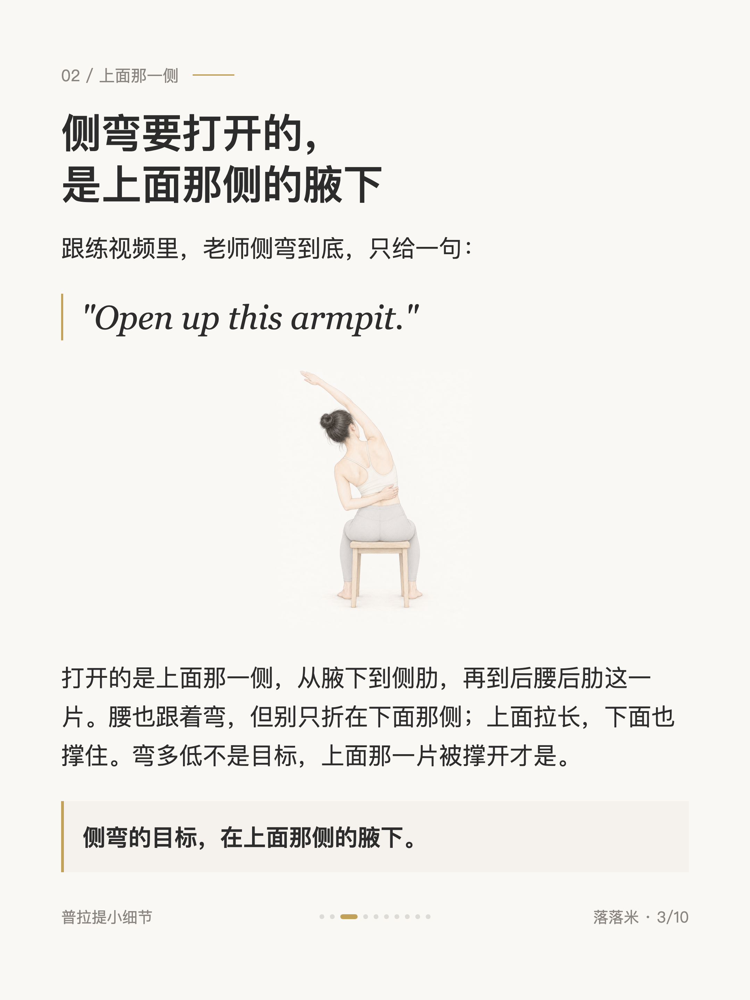
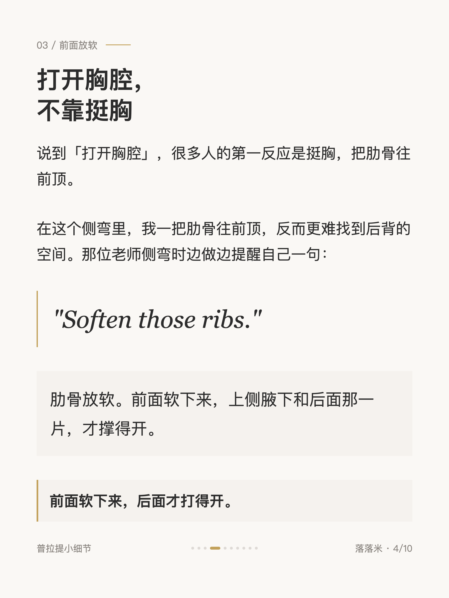
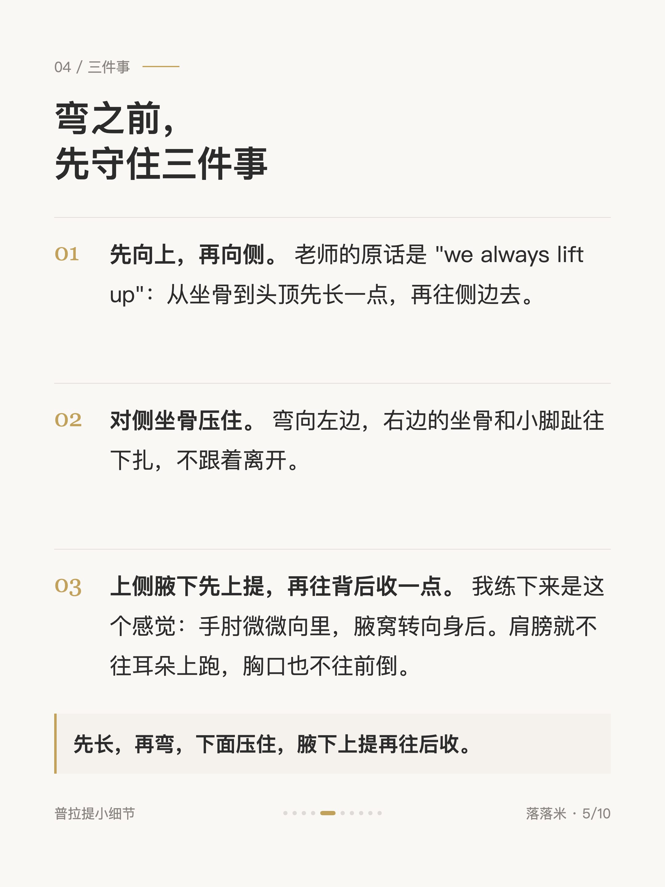
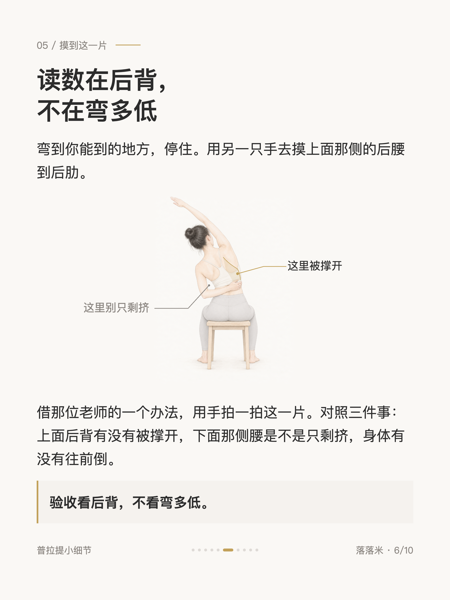
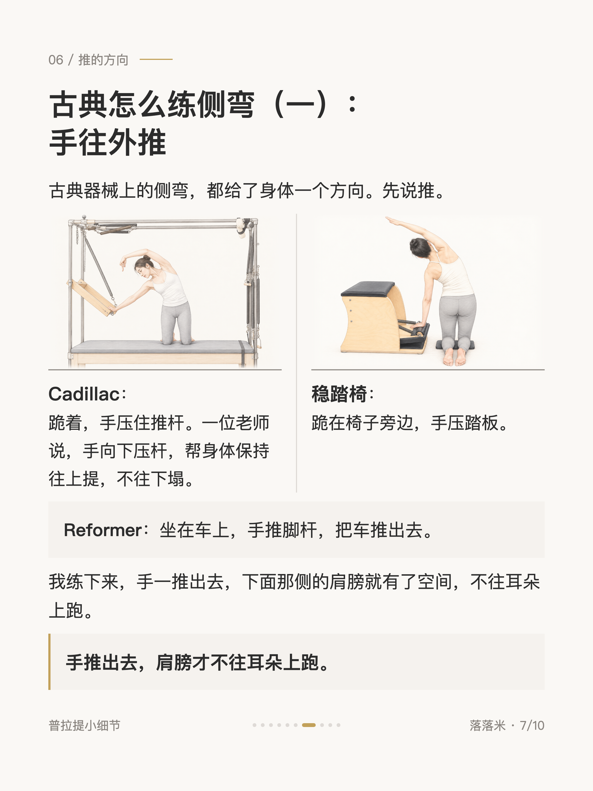
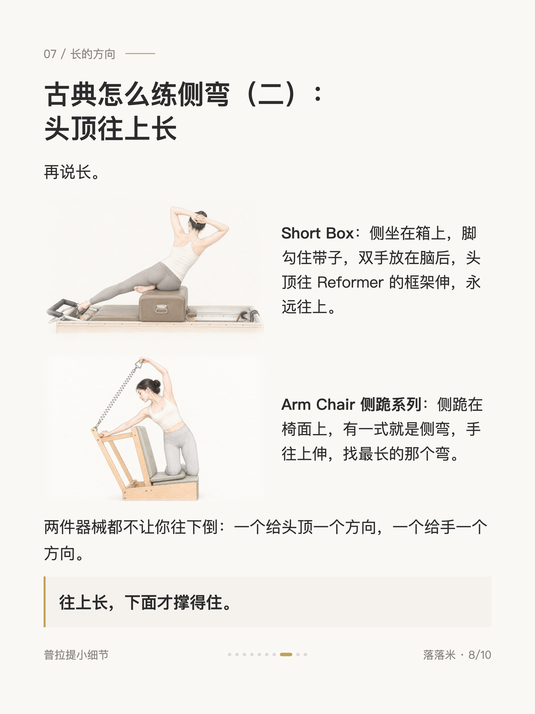
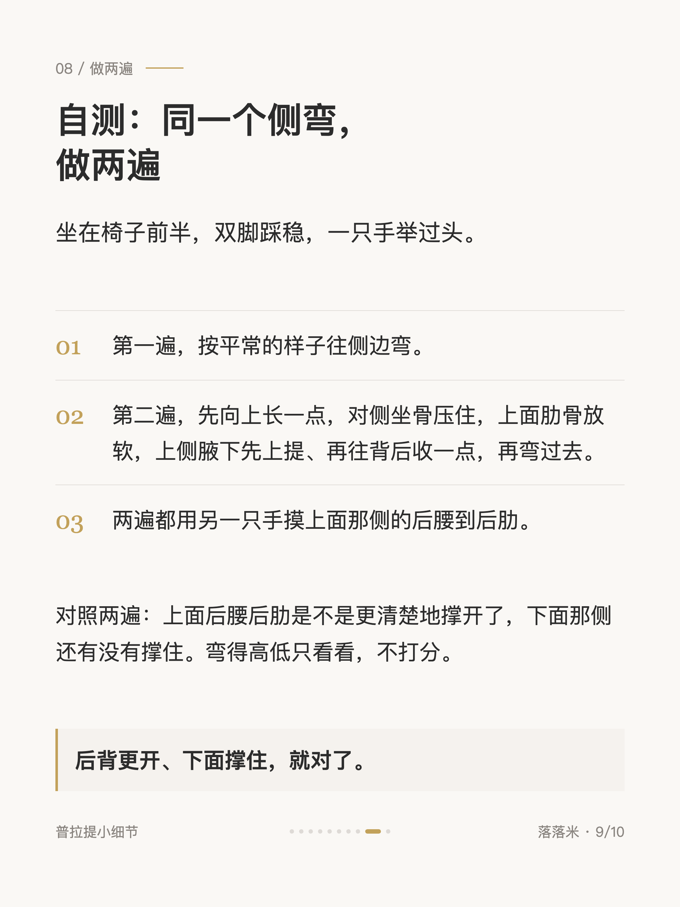
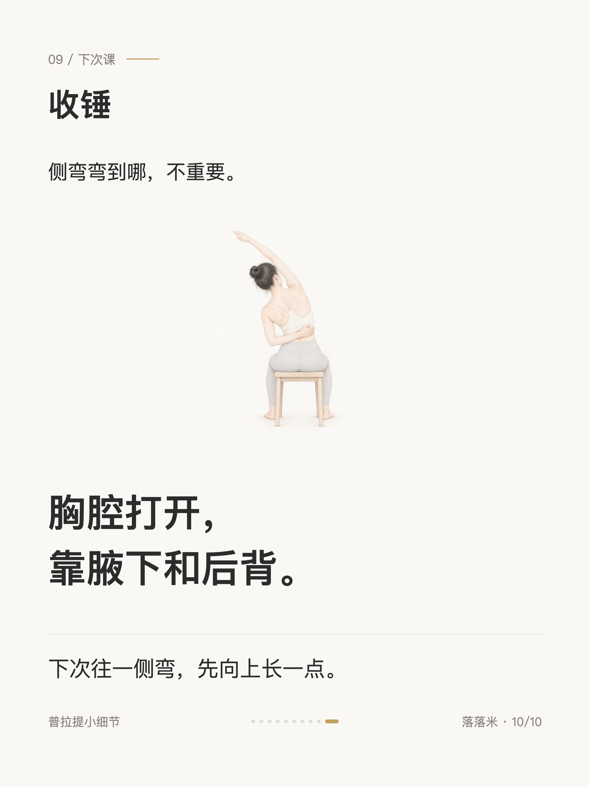

普拉提小细节 #012
普拉提侧弯，真正打开的是腋下

1 / 10

2 / 10

3 / 10

4 / 10

5 / 10

6 / 10

7 / 10

8 / 10

9 / 10

10 / 10
← 左右滑动浏览全部卡片 →
往一侧弯的时候，多数人感觉到的是腰在挤。侧弯要打开的其实是上面那一侧的腋下，一路到后腰后肋。
我自己做的时候，一把肋骨往前顶，反而更难找到后背的空间。卡片里有弯之前要守住的三件事、古典器械上的侧弯怎么练，和一个坐在椅子上就能做的两遍对照。上一篇讲转体，腋下往后送是为了转；这一篇腋下朝后，是为了不转。